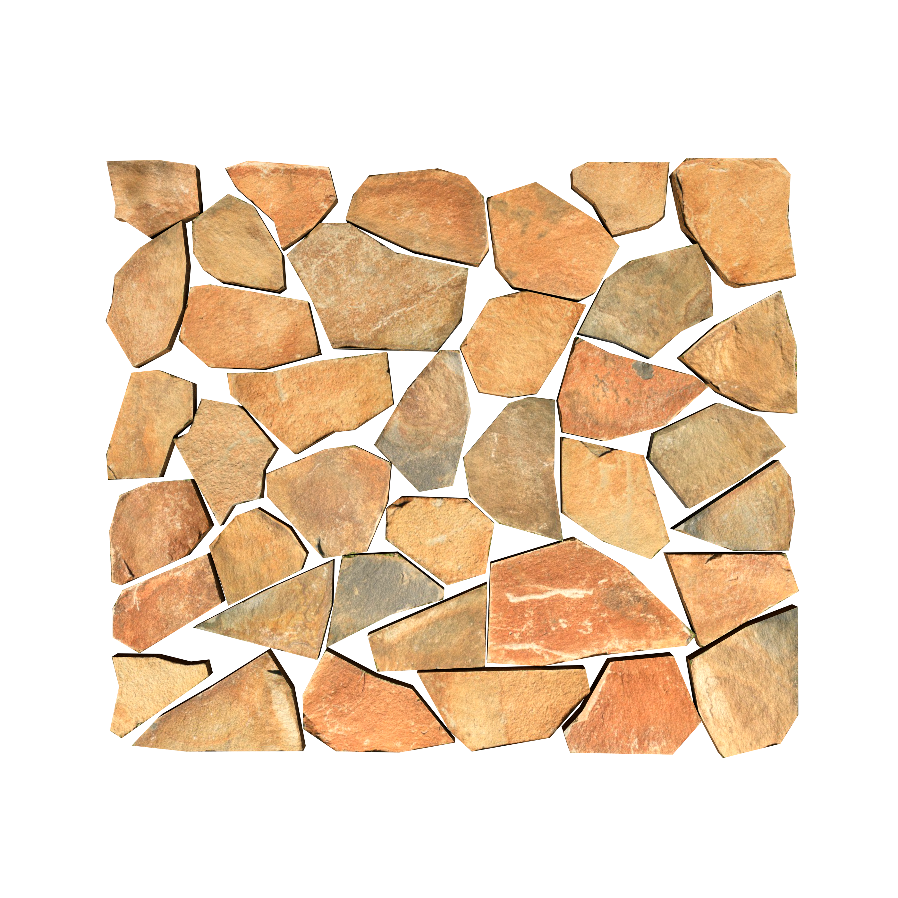

校园
校园步道
以步道上的树影与拐角为主题的练习作品。
查看校园步道详情this is my wbsite
看看我的作品我用练习作品记录校园、城市和周末生活。这些内容用于学习制作个人作品展示网站。
当前：全部 · 共 3 项

校园
以步道上的树影与拐角为主题的练习作品。
查看校园步道详情城市
以城市建筑与道路为主题的练习作品。
生活
以周末窗边小景为主题的练习作品。
这是课程练习网站，暂不提供真实联系方式，也不接收留言。
访问编程狮（练习链接）